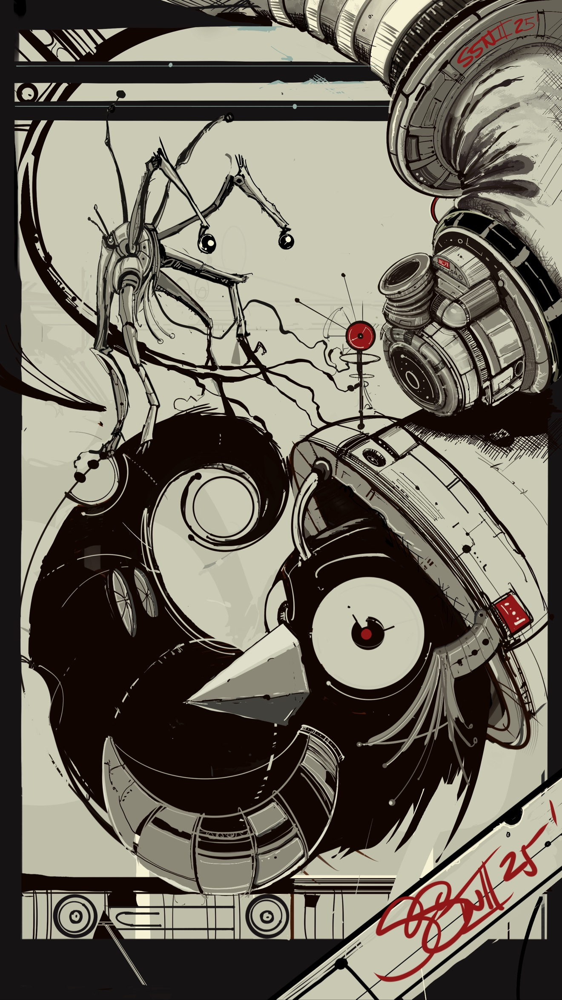
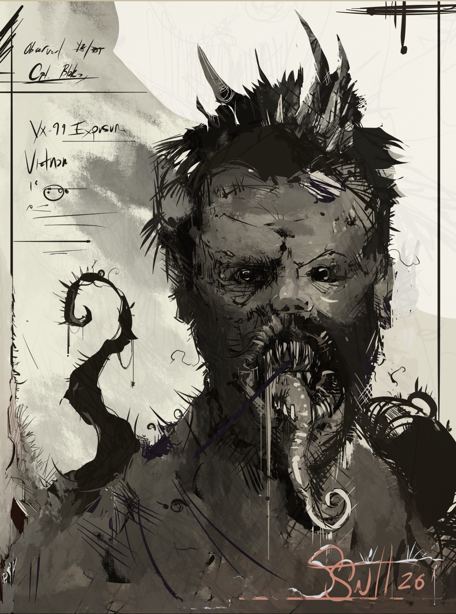
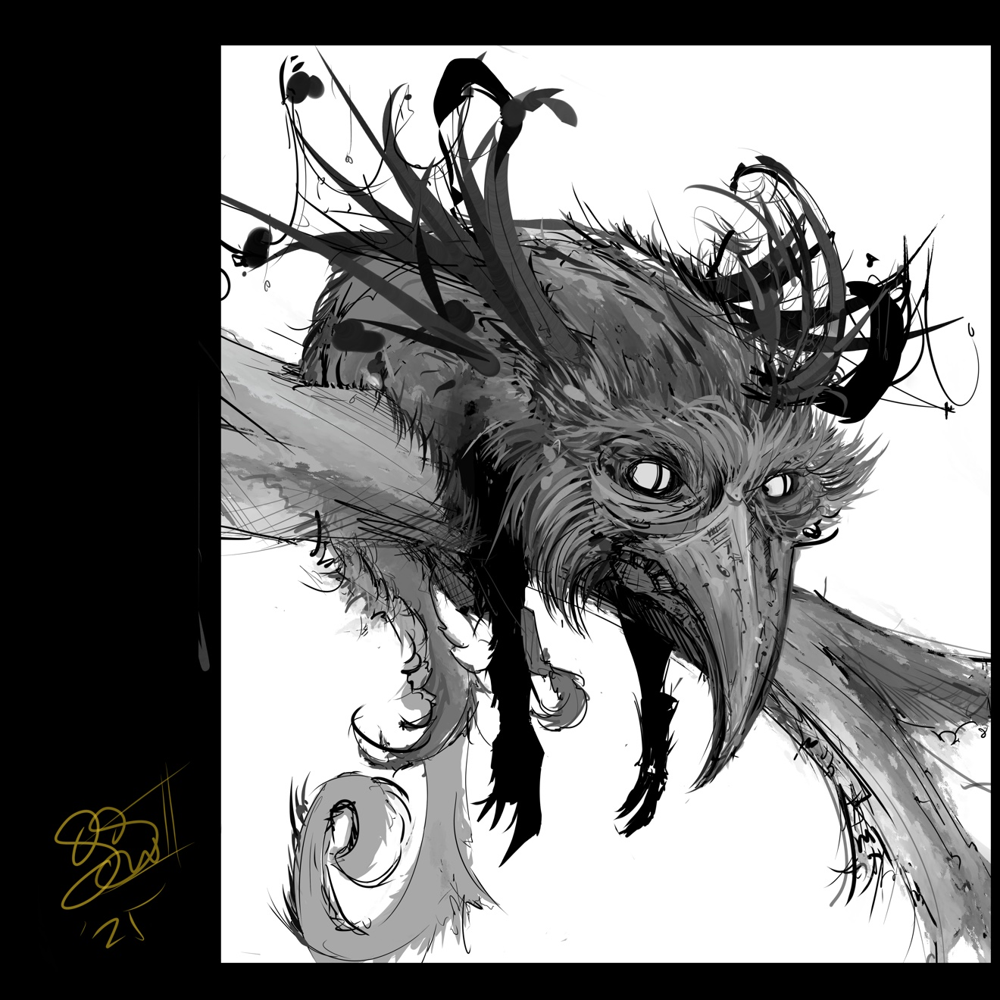
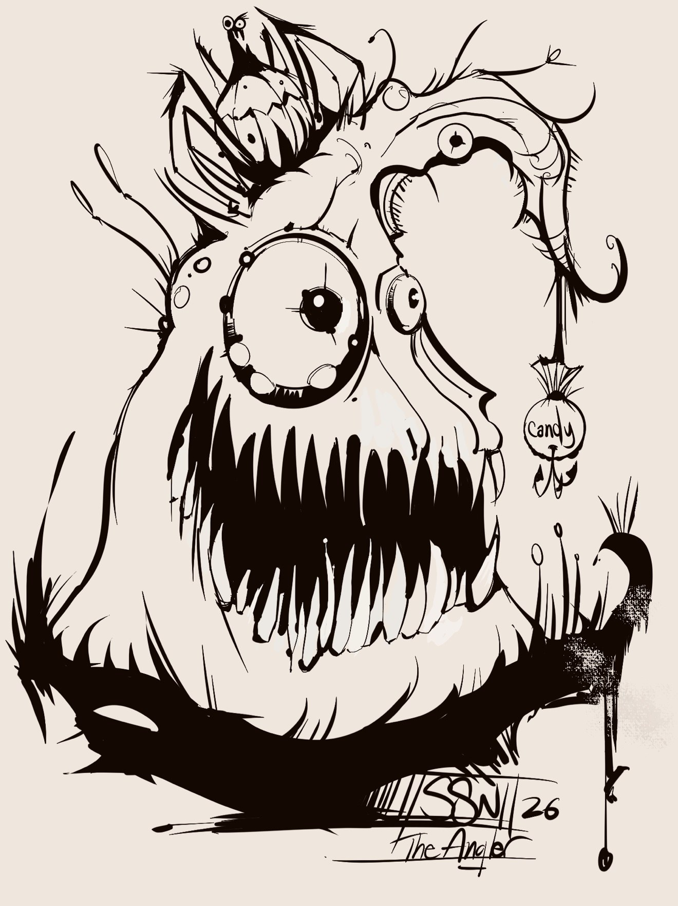
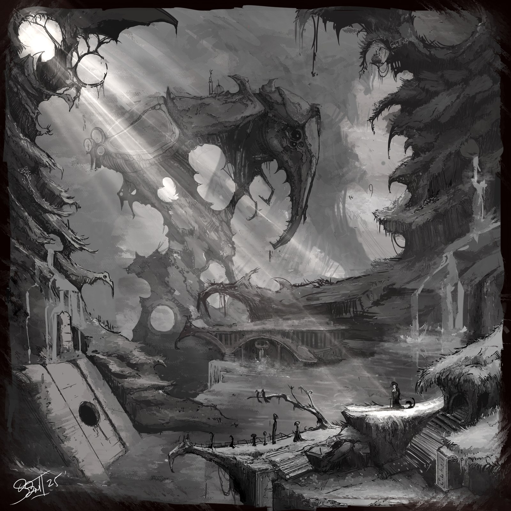
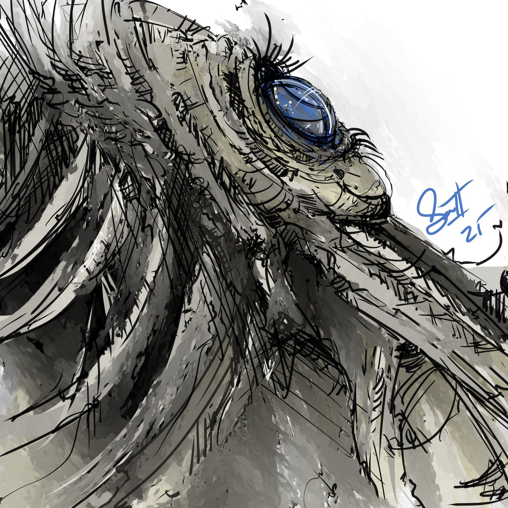
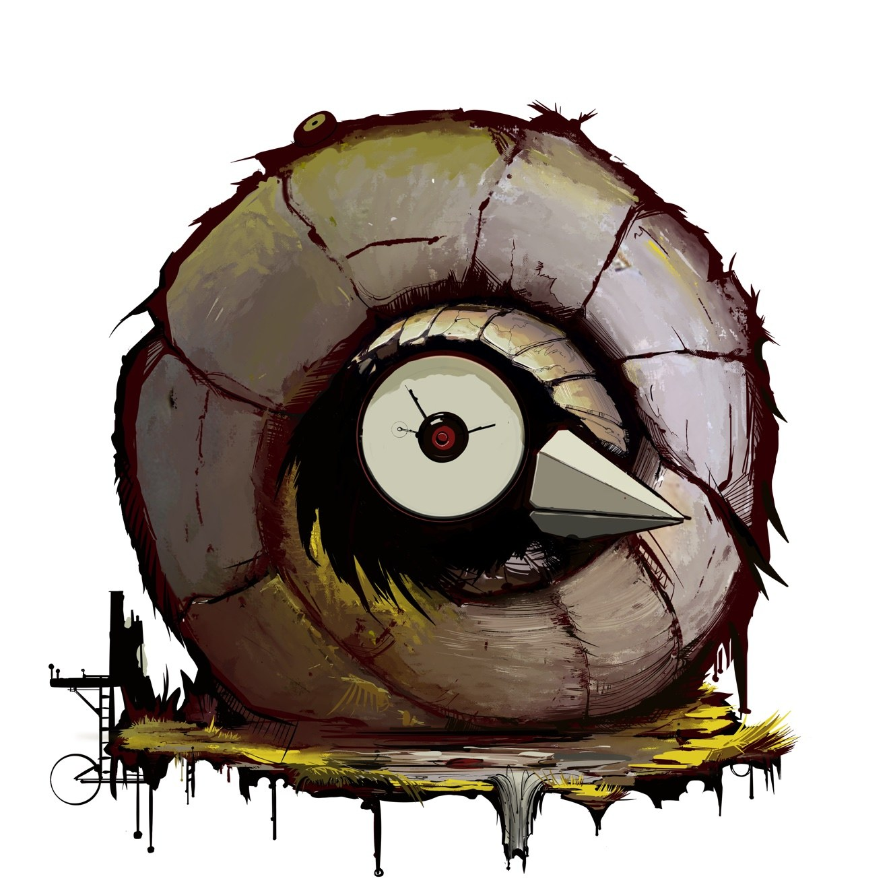
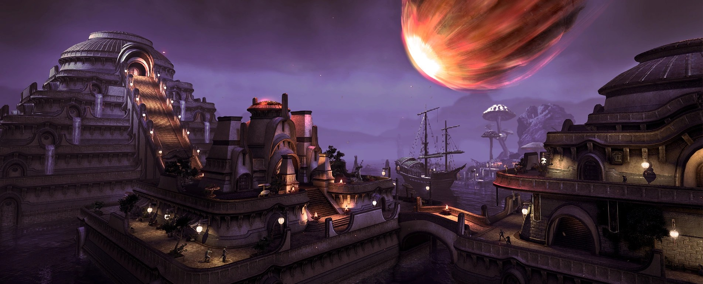
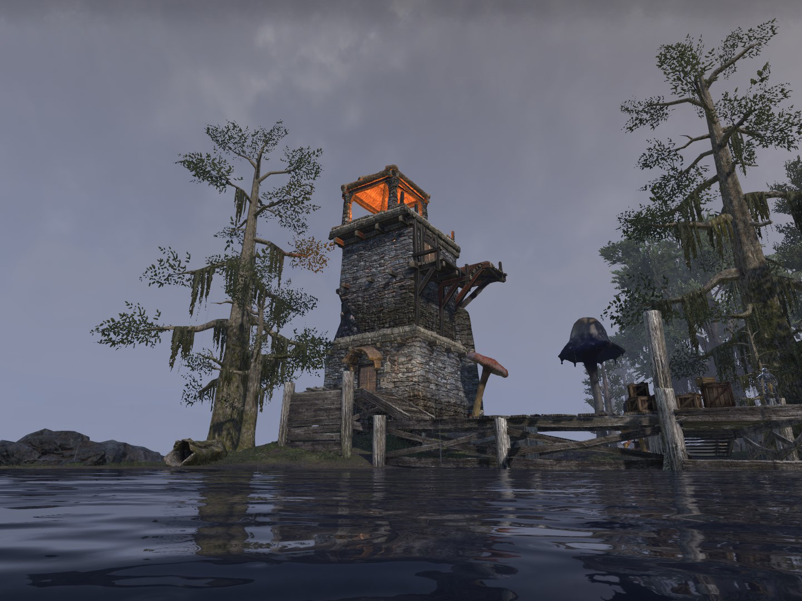

S. NELSON.
Art Director & Illustrator
Fifteen years building AAA game worlds from the ground up. Now all in on 2D.
Art Director & Illustrator
Fifteen years building AAA game worlds from the ground up. Now all in on 2D.
Ink, watercolor, and everything in between — the range, up front.
F-R0M. Ink and watercolor.

Where it all started. Ink.

Ink and watercolor.
Ink.

Ink and watercolor.
Fan art — the alien creature from Craig Robertson's Jon Ryan books, drawn while reading them. Ink.

Baby dragon, falls from its nest. Ink.

Ink.

Ink and watercolor.

Ink.

The studio mark. Ink and watercolor.
I spent 15 years building AAA game worlds from the ground level — projects worth hundreds of millions of dollars.
On Elder Scrolls Online I built the cities of the Morrowind chapter, the Imperial City, and the PvP war zones. Before that, city architecture on Warhammer Online. I finished as an Art Director at Microsoft.
Now I'm all in on 2D — art direction and illustration.


The short version.
I'm Steve Nelson — S. Nelson on the work. Twenty-five years in games, starting at Elmer Interactive in 2000 — fifteen of them inside AAA game studios, the last stretch as an art director. My specialty was always materials and texture: the way a surface tells you its history.
These days I run Swamp Shell Industries, my one-man studio, and I draw the things that live in my head — creatures, characters, and dark little worlds — in ink and watercolor. I'm also a musician, which is starting to bleed into the visuals.
If you're here because someone sent you: yes, I take on art direction and illustration work. The contact's below.